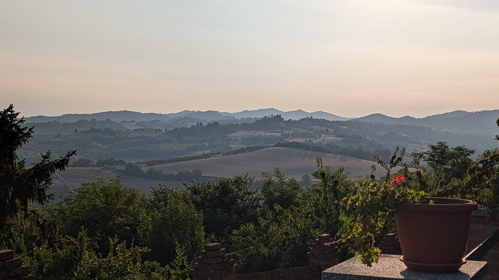

Associazione Turistica Pro Loco di Montiglio APS
Promuoviamo il territorio di Montiglio Monferrato, le sue tradizioni culturali, turistiche ed enogastronomiche dal 1988.
Scopri di piùChi siamo
La Pro Loco opera a favore dello sviluppo sociale e turistico del Comune di Montiglio Monferrato, valorizzando le realtà naturalistiche, culturali, storiche e sociali del territorio.
Tra le iniziative storiche figurano la Fiera Nazionale del Tartufo, Golosaria nel Monferrato, la Festa Patronale di San Lorenzo e attività di valorizzazione delle pievi, dei castelli e delle tradizioni locali.
Guarda gli eventi
Contattaci
Per informazioni sugli eventi, sul turismo o per collaborare con la Pro Loco di Montiglio, scrivici o vieni a trovarci.
- Email: prolocomontiglio@yahoo.it
- Sede legale: Piazza Umberto I n. 1, 14026 Montiglio Monferrato (AT)